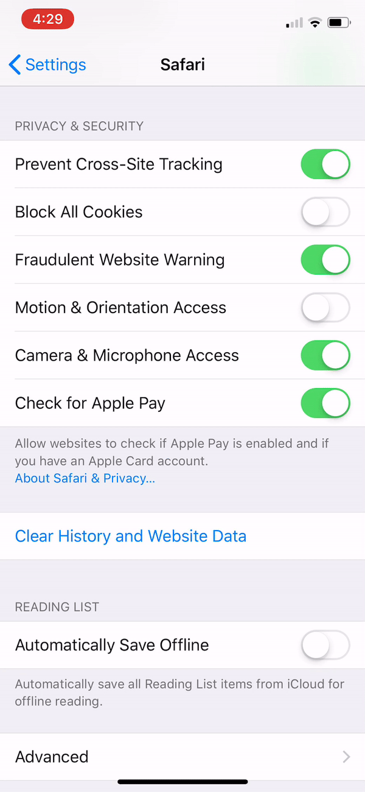

Motion Access
Is the background of chromapose.me black?
If you're using Safari on iOS, go to Settings and scroll down to Safari.

Under Privacy & Security, enable Motion & Orientation Access.

Now reload chromapose.me. Make sure the background changes colors when you move!